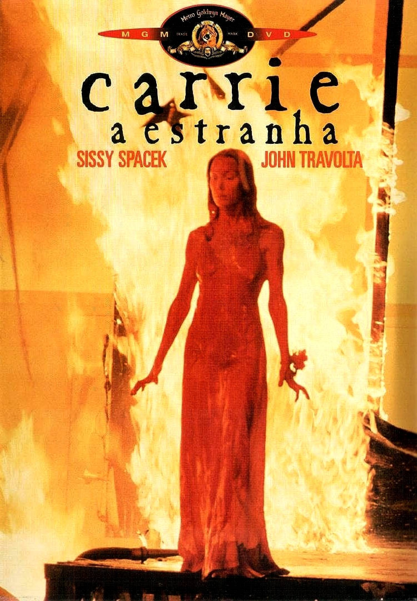

Carrie, a Estranha (1976)

Sinopse: Carrie White é uma adolescente tímida e oprimida, constantemente atormentada por colegas de escola e por sua mãe religiosa e fanática. Quando ela descobre que possui poderes telecinéticos, um evento traumático no baile de formatura desencadeia uma vingança sangrenta contra todos que a fizeram sofrer.
Diretor: Brian De Palma
Elenco Principal: Sissy Spacek (Carrie White), Piper Laurie (Margaret White), Amy Irving (Sue Snell), Nancy Allen (Chris Hargensen), John Travolta (Billy Nolan).
Bilheteria Mundial: Aproximadamente US$33.8 milhões
Curiosidades:
- Baseado no primeiro romance publicado de Stephen King.
- Sissy Spacek foi indicada ao Oscar de Melhor Atriz por sua atuação.
- A famosa cena do "banho de sangue" no baile é um dos momentos mais icônicos do cinema de terror.
- O filme inspirou diversas sequências, remakes e uma adaptação musical.